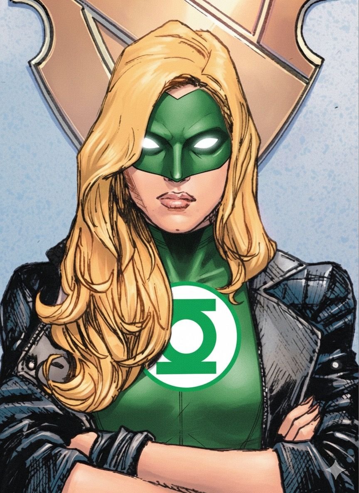

Starheart / Green Lantern legacy
Jade
Alan Scott’s daughter and a Starheart hero.
Jade, Jennifer-Lynn Hayden, belongs to Alan Scott’s legacy as well as the wider Lantern cast. Her natural green power should be distinguished from a standard Corps ring.
Continuity: The main-continuity daughter of Alan Scott. Her Starheart powers and periods using a Corps ring are different parts of her history.
- Affiliation
- Starheart / Green Lantern legacy
- First appearance
- All-Star Squadron #25 (September 1983)
Story history — History and later developments — spoilers
Alan Scott’s daughter inherits a connection to the Starheart and becomes part of Infinity Inc. Her stories also intersect with Kyle Rayner, including the material reprinted in DC Comics Presents: Green Lantern #1 from Green Lantern #137–140. That overlap does not make the Starheart identical to the Corps’ emotional-spectrum power. Her affiliation here acknowledges both strands rather than claiming a permanent Corps assignment.
Reference scope: DC identifies the All-Star Squadron #25 debut and her family legacy. The television article is used only for its explicit comic-book reference, not the adaptation’s biography.
Profile reviewed 2026-11-04.